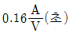
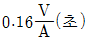
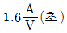
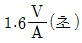
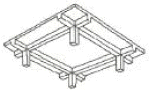
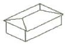
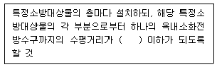
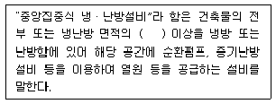
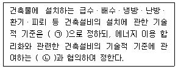
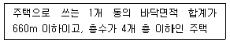

건축설비산업기사 (2018-03-04 기출문제)
1과목: 건축일반
1. 사무소건축의 승강기 배치에 관한 설명으로 옳지 않은 것은?
- 1개소의 승강기가 6대일 경우 알코브형으로는 배치할수 없으므로 직렬로 배치하도록 한다.
- 되도록 1개소에 집중 배치한다.
- 외래자에게 직접 잘 알려질 수 있는 위치에 배치한다.
- 승강기의 배열은 단거리 보행으로 모든 승강기에 접근할 수 있도록 한다.
(정답률: 83%)

2. 천창채광방식에 관한 설명으로 옳지 않은 것은?
- 통풍과 차열에 불리하다.
- 조도 분포가 균일하다.
- 채광량면에서 매우 우수하다.
- 구조와 시공이 용이하며, 빗물처리에 탁월한 효과가 있다.
(정답률: 78%)
3. 주택계획에 관한 설명으로 옳지 않은 것은?
- 주택의 규모가 작을 경우 복도를 설치하는 것은 부적합하다.
- 소규모 주택에서 부엌의 일부에 식탁을 놓아 사용하는 식당의 형태를 리빙다이닝이라 한다.
- 거실영역이 통과 동선이 되지 않도록 한다.
- 침실에서 침대상수 머리쪽에는 창을 두지 않는 것이 좋다.
(정답률: 75%)
4. 목재의 이음과 맞춤에 관한 설명으로 옳지 않은 것은?
- 재는 될 수 있는 한 적게 깎아내어 약하지 않게 한다.
- 이음과 맞춤은 그 응력이 작은 곳에서 만든다.
- 동작이 간단한 접합을 이용하고 모양에 치중하지 않는다.
- 이음과 맞춤의 단면은 응력방향에 수평으로 한다.
(정답률: 65%)
5. 학교의 복도 및 계단 계획에서 고려해야 할 사항으로 옳지 않은 것은?
- 단순한 통로의 기능 이외에 기타의 공간으로도 적극 활용하도록 한다.
- 계단은 옥외시설, 공지 등에 출입하기 쉬운 위치에 둔다.
- 알코브는 구조계획상 어려움이 동반되고 위험요소가 될 수 있으므로 되도록 피한다.
- 계단의 위치는 각 층의 학생이 균일하게 이용할 수 있는 곳에 설치한다.
(정답률: 69%)
6. 교실 유닛플랜 중 복도에서의 소음이 가장 적은 유형은?
- 배터리형
- 중복도형
- 편복도형
- 오픈플랜형
(정답률: 68%)
7. 철근콘크리트구조에서 철근의 부착력에 관한 설명으로 옳지 않은 것은?
- 철근의 주장과는 관계가 없다.
- 철근의 끝에 갈고리(hook)가 있는 것이 크다.
- 압축강도가 큰 콘크리트일수록 크다.
- 철근의 표면상태와 단면모양에 큰 영향을 받는다.
(정답률: 78%)
8. Sabine의 잔향시간(RT)을 구하는 식으로 옳은 것은? (단, V : 실의 용적, A : 실내 총 흡음력)




(정답률: 63%)
9. 다음 철근콘크리트 슬래브의 구조적 명칭으로 옳은 것은?

- 플랫 플레이트
- 2방향 슬래브
- 플랫 슬래브
- 워플 슬래브
(정답률: 61%)
10. 경제적 채산성이 가장 우선시 되는 사무소 유형은?
- 전용사무소
- 준전용사무소
- 임대사무소
- 운임대사무소
(정답률: 83%)
11. 리조트호텔(resort hotel)에 속하지 않는 것은?
- 산장호텔(mountain hotel)
- 온천호텔(hot spring hotel)
- 터미널호텔(terminal hotel)
- 해변호텔(beach hotel)
(정답률: 88%)
12. 호텔의 동선계획에 관한 설명으로 옳지 않은 것은?
- 고객 동선과 서비스 동선은 분리시킨다.
- 숙박고객과 연회고객의 출입구는 분리한다.
- 숙박고객은 프런트를 거치지 않고 직업 주차장으로 가도록 한다.
- 고객동선은 명료하고 단순해야 한다.
(정답률: 89%)
13. 환기 설비 중 후드를 설치해야 하는 장소는?
- 다용도실
- 욕실
- 부엌
- 안방
(정답률: 88%)
14. 프리스트레스트 콘크리트 구조에 사용되는 재료 또는 장비가 아닌 것은?
- 엔드탭
- 커플러
- 시스
- 긴장재
(정답률: 58%)
15. 쇼핑센터(Shopping center)를 구성하는 주요 요소와 가장 관계가 먼 것은?
- 핵상점
- 페데스트리언 지대
- 몰(mall)
- 터미널(Terminal)
(정답률: 72%)
16. 건축모듈의 사용방법에 관한 설명으로 옳지 않은 것은?
- 창호의 치수는 문틀과 벽사이의 줄눈 중심간의 치수가 모듈치수에 적합해야 한다.
- 조립식 건물은 각 조립부재의 줄눈 중심간의 거리가 모듈치수에 일치해야 한다.
- 모든 모듈상의 치수는 공칭치수를 말한다.
- 건물의 평면길이와 높이는 모두 2M(30cm)의 배수가 되게 한다.
(정답률: 75%)
17. 다음 그림과 같은 지붕의 명칭은?

- 박공지붕
- 모임지붕
- 합각지붕
- 방형지붕
(정답률: 80%)
18. 상점건축의 계획요소 중 외관 전시계획 수립 시 고려해야 할 내용으로 옳지 않은 것은?
- 셔터를 내린 후의 건축물 외관은 영업종료 시점이므로 고려대상이 아니다.
- 상점내로의 유도를 위한 효과 있는 전시계획 및 입구를 마련한다.
- 통행고객의 시선을 멈추게 하는 효과를 고려한다.
- 상점의 업종 취급상품이 인지될 수 있도록 투명 유리를 이용한다.
(정답률: 87%)
19. 주거단위가 동일층에 한하여 구성되며 각층에 통로 또는 엘리베이터를 설치하는 아파트의 단면형식은?
- 플랫형(flat type)
- 스킵형(skip type)
- 트리플렉스형(triplex type)
- 메조넷형(maisonette type)
(정답률: 76%)
20. 결로의 원인으로 보기 어려운 것은?
- 생활습관에 의한 잦은 환기 실시
- 시공직후 콘크리트, 모르타르 등의 미건조 상태
- 실내와 실외의 큰 온도차
- 실내 습기의 과다 발생
(정답률: 89%)
2과목: 위생설비
21. 다음 중 배수트랩에 속하지 않는 것은?
- S 트랩
- 벨 트랩
- 드럼 트랩
- 버킷 트랩
(정답률: 61%)
22. 보틀트랩에 관한 설명으로 옳지 않은 것은?
- 청소가 용이하다.
- 자기사이펀 작용으로 인한 봉수파괴가 어렵다.
- 내부에 격벽이 있어 배수 트랩으로 많이 사용된다.
- P형, S형, U형 등의 트랩에 비하여 자정작용이 떨어진다.
(정답률: 59%)
23. 가스사용시설에서 가스계량기는 전기계량기로부터 최소 얼마 이상의 거리를 유지하여야 하는가?
- 15cm
- 30cm
- 45cm
- 60cm
(정답률: 73%)
24. 지하의 수조에서 매시간 27m 의 물을 고가수조로 양수할 때 유속을 1.5m/s로 하면 필요한 양수 펌프의 구경은?
- 50mm
- 60mm
- 70mm
- 80mm
(정답률: 39%)
25. 수도직결방식의 급수방식에 관한 설명으로 옳지 않은 것은?
- 고층으로의 급수가 어렵다.
- 위생성 측면에서 바람직한 방식이다.
- 수도 본관의 영향을 그대로 받아 수압 변화가 심하다.
- 저수조가 있어 단수 시에도 일정량의 급수를 계속할 수 있다.
(정답률: 76%)
26. 스프링클러헤드가 설치되어 있는 배관을 의미 하는 것은?
- 주배관
- 가지배관
- 교차배관
- 신축배관
(정답률: 79%)
27. 급탕배관계통에서 배관 중 총손실열량이 15000W이고 급탕온도가 70℃, 환수온도가 60℃일 때, 순환수량은? (단, 물의 비열은 4.2kJ/kg・K, 밀도는 1kg/L이다.)
- 21.4L/min
- 26.5L/min
- 50.1L/min
- 72.5L/min
(정답률: 39%)
28. 배수 수직관의 상단을 연장시켜 대기 중에 개구시키는 통기관은?
- 각개통기관
- 신정통기관
- 루프통기관
- 결합통기관
(정답률: 71%)
29. 수격작용에 관한 설명으로 옳지 않은 것은?
- 수격압은 관내의 유속과 반비례한다.
- 수격작용은 밸브를 급속도로 개폐할 때 발생한다.
- 수격작용으로 인하여 배관이 진동되고 소음이 발생되기도 한다.
- 수격작용의 발생을 방지하기 위하여 위생기구 근처에 공기실을 설치한다.
(정답률: 76%)
30. 역류를 방지하여 오염으로부터 상수계통을 보호하기 위한 방법으로 옳지 않은 것은?
- 토수구 공간을 둔다.
- 역류방지밸브를 설치한다.
- 크로스 커넥션이 되도록 배관한다.
- 대기압식 또는 가압식 진공브레이커를 설치한다.
(정답률: 75%)
31. 배수배관에 통기관을 설치하는 목적과 가장 관계가 먼 것은?
- 배수의 흐름을 원활하게 한다.
- 관 내의 기압을 높여 악취를 배출한다.
- 배수계통 내의 공기의 흐름을 원활하게 한다.
- 자기사이펀 작용, 유도사이펀 작용 등으로부터 봉수를 보호한다.
(정답률: 75%)
32. 위생기구에 관한 설명으로 옳지 않은 것은?
- 위생기구의 오버플로관은 기구트랩의 유출 측에 접속하여야 한다.
- 위생기구에는 배수관이나 이음쇠 등의 연결부에 청소용 소제구를 설치한다.
- 벽 또는 바닥에 접촉되는 위생기구의 접합부는 합성수지제 방수제로 막거나 방수처리를 한다.
- 오버플로 기능을 내장한 기구는 오버플로에서 넘친물이 배수경로에 잔류하지 않는 구조로 한다.
(정답률: 61%)
33. 다음은 옥내소화전설비의 방수구에 관한 설명이다. ( )안에 알맞은 것은?

- 15m
- 20m
- 25m
- 30m
(정답률: 68%)
34. 물의 경도는 물 속에 녹아있는 칼슘, 마그네슘 등의 염류의 양을 무엇의 농도로 환산하여 나타낸 것인가?
- 탄산칼슘
- 탄산나트륨
- 염화나트륨
- 염화마그네슘
(정답률: 78%)
35. 급탕기기의 용량에 관한 설명으로 옳지 않은 것은?
- 일반적으로 가열기 능력과 저탕탱크 용량과의 사이에는 반비례 관계가 있다.
- 동시사용율이 높은 건물은 일반적으로 가열 부하와 최대부하가 거의 일치한다.
- 동시사용율이 높은 건물은 일반적으로 가열기 능력을 작게 하고 저탕탱크는 대용량으로 한다.
- 급탕기기는 건물 내 사람의 일일 사용량과 피크시간대에 대응할 수 있는 용량으로 선정한다.
(정답률: 65%)
36. 동일한 관경의 관을 직선 연결할 때 사용되는 관 이음쇠는?
- 니플
- 부싱
- 크로스
- 플러그
(정답률: 77%)
37. 급수배관의 설계 및 시공상의 주의점으로 옳지 않은 것은?
- 고가수조에서의 수평주관은 하향기울기로 한다.
- 수평배관에는 공기나 오물이 정체하지 않도록 한다.
- 급수주관으로부터 분기하는 경우에는 반드시 엘보(elbow)를 사용한다.
- 주배관에는 적당한 위치에 플랜지 이음을 하여 보수 점검을 용이하게 한다.
(정답률: 75%)
38. 기구배수 부하단위(fuD) 산정에 기준이 되는 기구는?
- 세면기
- 대변기
- 샤워기
- 욕조
(정답률: 85%)
39. 중앙식 급탕법 중 직접가열식에 관한 설명으로 옳지 않은 것은?
- 열효율이 높다.
- 보일러 안에 스케일이 부착될 우려가 있다.
- 건물높이에 관계없이 저압보일러가 사용된다.
- 저탕조와 보일러를 직결하여 순환 가열하는 방식이다.
(정답률: 80%)
40. 수질과 관련된 용어 중 SS의 의미로 가장 알맞은 것은?
- 부유물질
- 용존산소
- 수소이온농도
- 생물화학적 산소요구량
(정답률: 75%)
3과목: 공기조화설비
41. 다음 중 사용목적이 동일한 배관 부속의 연결이 아닌 것은?
- 플러그 - 캡
- 티 - 레듀서
- 유니온 - 플랜지
- 부싱 - 이경소켓
(정답률: 67%)
42. 송풍기의 풍량제어방식 중 축동력이 가장 많이 소요되는 방식은?
- 회전수제어
- 토출댐퍼제어
- 흡입베인제어
- 흡입댐퍼제어
(정답률: 73%)
43. 냉난방 부하계산 시 최저 또는 최고 기온을 적용하지 않고 TAC온도를 적용하는 가장 주된 이유는?
- 대수분리 제어
- 과대용량 억제
- 비정상 부하계산
- 계산의 용이성 확보
(정답률: 70%)
44. 냉방부하 중 송풍기 풍량의 산출 요인과 관계가 없는 것은?
- 인체의 발생열량
- 벽체로부터의 취득열량
- 극간풍에 의한 취득열량
- 외기의 도입으로 인한 취득열량
(정답률: 43%)
45. 여름철 실내에 위치한 냉장고 안의 습도는 어떤 상태인가?
- 상대습도는 높고 절대습도는 낮다.
- 상대습도는 높고 절대습도도 높다.
- 상대습도는 낮고 절대습도는 높다.
- 상대습도는 낮고 절대습도도 낮다.
(정답률: 54%)
46. 다음 중 대단위 아파트 단지에 지역난방을 택하는 이유와 가장 관계가 먼 것은?
- 연료관리가 합리적이다.
- 보일러의 열효율이 높다.
- 각 세대의 개별제어가 쉽다.
- 운전관리를 전문화시킬 수 있다.
(정답률: 69%)
47. 냉수코일에서 코일입구공기의 온도를 28℃, 출구 공기온도를 14℃, 입구수온을 7℃, 출구수온을 12℃라 할때 대수평균온도차 MTD는 얼마인가? (단, 공기와 냉수의 흐름은 평행류이다.)
- 5.78℃
- 8.08℃
- 10.88℃
- 22.98℃
(정답률: 41%)
48. 다음 중 난방용 온수배관 설계 순서에 있어서 가장 먼저 이루어져야 하는 작업은?
- 배관경 결정
- 난방부하 계산
- 온수순환펌프 결정
- 각 구간별 온수 순환량 산출
(정답률: 78%)
49. 배관 내를 흐르는 유체의 마찰에 의해 발생되는 압력손실에 관한 설명으로 옳은 것은?
- 관 내경에 반비례한다.
- 관 길이에 반비례한다.
- 유체의 밀도에 반비례한다.
- 유체속도의 제곱에 반비례한다.
(정답률: 66%)
50. 전공기방식의 공조에서 환기에 일정량의 외기를 혼합하여 공조기를 거치게 하는 가장 주된 이유는?
- 습도조절
- 온도조절
- 에너지 절감
- 오염도 희석
(정답률: 65%)
51. 공조기용 코일에 관한 설명으로 옳지 않은 것은?
- 냉수코일의 전면풍속은 2.0~3.0m/s의 범위내로 하는 것이 좋다.
- 튜브내의 유속은 1.0m/s 전후로 하는 것이 배관이나 펌프의 설비비 및 효율상 적당하다.
- 냉수코일과 온수코일을 겸용으로 사용하는 경우, 선정은 온수코일을 기준으로 하는 것이 원칙이다.
- 냉수코일에 부착된 응축수가 날려서 송풍기의 흡입구 측으로 들어오는 것을 막기 위해 코일 출구쪽에 엘리미네이터를 설치한다.
(정답률: 57%)
52. 양정 H=50m, 유량 Q=2m/min인 펌프의 축동력은? (단, 펌프의 효율은 0.58)
- 9.5kW
- 16.3kW
- 28.2kW
- 34.2kW
(정답률: 53%)
53. 다음 중 각 실의 개별제어성이 가장 우수한 덕트 배치 방식은?
- 간선덕트(천장취출)
- 간선덕트(벽취출)
- 개별덕트(천장취출)
- 환상덕트(벽취출)
(정답률: 81%)
54. 2m/s의 유속으로 35L/min의 유량이 흐르는 배관의 관경을 계산에 의해 구한 값은?
- 약 15.4mm
- 약 19.3mm
- 약 22.7mm
- 약 25.2mm
(정답률: 46%)
55. 취출구 및 흡입구에서의 풍속을 제한하는 가장 주된 이유는?
- 소음제어
- 송풍동력 절감
- 덕트크기의 제한
- 기류확산 범위 확대
(정답률: 72%)
56. 온수난방에 관한 설명으로 옳은 것은?
- 온수순환펌프는 반드시 진공펌프를 사용한다.
- 증기난방보다 열용량이 적으므로 예열시간이 짧다.
- 증기난방에 비하여 난방부하 변동에 따른 온도 조절이 어렵다.
- 보일러 정지 후에도 여열이 남아 있어 실내 난방이 어느 정도 지속된다.
(정답률: 70%)
57. 실내 취득 현열량이 50000W 일 때, 실내의 온도를 26℃로 유지하기 위해 실내에 공급하여야 할 풍량은? (단, 공기의 비열은 1.01kJ/kg・K, 공기의 밀도는 1.2kg/m3이고 실내에 공급되는 공기의 온도는 14.1℃이다.)
- 약 9250m3/h
- 약 10450m3/h
- 약 12480m3/h
- 약 15115m3/h
(정답률: 53%)
58. 전손실열량이 15kW인 사무실에 설치할 증기난방용 방열기의 필요 섹션수는? (단, 표준상태이며, 표준방열량은 0.756kW/m2, 방열기 섹션 1개의 방열면적은 0.2m2이다.)
- 80섹션
- 90섹션
- 100섹션
- 120섹션
(정답률: 57%)
59. 습공기에 관한 설명으로 옳은 것은?
- 수증기 함유량이 많을수록 엔탈피는 작아진다.
- 노점온도가 낮을수록 공기 중의 수증기 함유량은 많아진다.
- 습공기 중의 수증기 함유량이 많을수록 수증기 분압이 커진다.
- 동일온도에서는 수증기 함유량이 많을수록 건구온도와 습구온도의 차이는 커진다.
(정답률: 49%)
60. 겨울철 중력환기를 위한 급기구와 배기구의 설치위치로 가장 알맞은 것은?
- 급기구 및 배기구를 모두 낮은 곳에 설치
- 급기구 및 배기구를 모두 높은 곳에 설치
- 급기구는 낮은 곳, 배기구는 높은 곳에 설치
- 급기구는 높은 곳, 배기구는 낮은 곳에 설치
(정답률: 78%)
4과목: 건축설비관계법규
61. 다음은 건축물의 에저지절약설계기준에 따른 용어의 정의이다. ( )안에 알맞은 것은?

- 40%
- 50%
- 60%
- 70%
(정답률: 74%)
62. 건축물의 피난・안전을 위하여 초고층 건축물 중간층에 설치하는 대피공간인 피난안전구역의 높이는 최소 얼마 이상이어야 하는가?
- 1.8m
- 2.1m
- 2.4m
- 4.0m
(정답률: 59%)
63. 공동주택과 오피스텔의 난방설비를 개별난방 방식으로 하는 경우에 관한 기준 내용으로 옳지 않은 것은?
- 보일러의 연도는 내화구조로서 공동연도로 설치할 것
- 오피스텔의 경우에는 난방구획을 방화구획으로 구획 것
- 보일러실의 윗부분에는 그 면적이 0.5m 이상인 환기창을 설치할 것
- 보일러실의 윗부분에는 공기흡입구를 평상시에 닫혀있는 상태가 되도록 설치할 것
(정답률: 65%)
64. 다음 중 신고대상에 속하는 건축물의 용도변경은?
- 운동시설에서 수련시설로의 용도변경
- 숙박시설에서 종교시설로의 용도변경
- 위락시설에서 방송통신시설로의 용도변경
- 운수시설에서 자동차 관련 시설로의 용도변경
(정답률: 50%)
65. 건축법령상 주요구조부에 속하지 않는 것은?
- 보
- 바닥
- 지붕틀
- 옥외 계단
(정답률: 81%)
66. 방염성능기준 이상의 실내장식물 등을 설치하여야 하는 특정소방대상물에 속하지 않는 것은?
- 수영장
- 숙박시설
- 의료시설 중 종합병원
- 방송통신시설 중 방송국
(정답률: 74%)
67. 급수・배수(配水)・배수(排水)・환기・난방설비를 건축물에 설치하는 경우, 건축기계설비기술사 또는 공조냉동기계기술사의 협력을 받아야 하는 대상 건축물에 속하지 않는 것은? (단, 해당 용도에 사용되는 바닥면적의 합계가 2000m2인 건축물의 경우)
- 업무시설
- 의료시설
- 숙박시설
- 유스호스텔
(정답률: 70%)
68. 다음의 소방시설 중 경보설비에 속하지 않는 것은?
- 비상방송설비
- 자동화재탐지설비
- 자동화재속보설비
- 무선통신보조설비
(정답률: 77%)
69. 문화 및 집회시설 중 공연장의 개별관람석의 출구에 관한 기준 내용으로 옳지 않은 것은? (단, 개별관람석의 바닥면적이 300m2 이상인 경우)
- 관람석별로 2개소 이상 설치할 것
- 각 출구의 유효너비는 1.5m 이상일 것
- 개별관람석으로부터 바깥쪽으로의 출구로 쓰이는 문은 안여닫이로 하지 않을 것
- 개별 관람석 출구의 유효너비의 합계는 개별 관람석의 바닥면적 100m2마다 0.5m의 비율로 산정한 너비 이상으로 할 것
(정답률: 58%)
70. 피난층이 있는 비상용 승강기의 승강장 출입구로부터 도로 또는 공지(공원・광장 기타 이와 유사한 것으로 서 피난 및 소화를 위한 당해 대지에의 출입에 지장이 없는 것을 말한다)에 이르는 거리는 최대 얼마 이하로 하여야 하는가?
- 10m
- 20m
- 30m
- 40m
(정답률: 64%)
71. 공동주택에서 리모델링이 쉬운 구조에 관한 기준 내용으로 옳지 않은 것은?
- 공동주택의 층수, 건축면적 또는 연면적을 변경할 수 있을 것
- 구조체에서 건축설비, 내부 마감재료 및 외부마감재료를 분리할 수 있을 것
- 개별 세대 안에서 구획된 실(室)의 크기, 개수 또는 위치 등을 변경할 수 있을 것
- 각 세대는 인접한 세대와 수직 또는 수평 방향으로 통합하거나 분할할 수 있을 것
(정답률: 60%)
72. 6층 이상의 거실 면적의 합계가 10000m2인 업무 시설에 설치하여야 하는 승용승강기의 최소 대수는? (단, 15인승 승강기의 경우)
- 4대
- 5대
- 6대
- 7대
(정답률: 56%)
73. 비상방송설비를 설치하여야 하는 특정소방대상물의 연면적 기준은?
- 1500m2 이상
- 2500m2 이상
- 3500m2 이상
- 4500m2 이상
(정답률: 43%)
74. 다음은 건축법령상 건축설비 설치의 원칙에 관한 기준 내용이다. ( )안에 알맞은 것은?

- ㉠ 국토교통부령, ㉡ 산업통상자원부장관
- ㉠ 국토교통부령, ㉡ 과학기술정보통신부장관
- ㉠ 산업통상자원부령, ㉡ 국토교통부장관
- ㉠ 산업통상자원부령, ㉡ 과학기술정보통신부장관
(정답률: 72%)
75. 건축법령상 다음과 같이 정의되는 주택의 종류는?

- 다중주택
- 연립주택
- 다가구주택
- 다세대주택
(정답률: 59%)
76. 건축물의 출입구에 설치하는 회전문에 관한 기준 내용으로 옳지 않은 것은?
- 회전문과 바닥 사이는 3cm 이상의 간격을 확보할 것
- 계단이나 에스컬레이터로부터 1.5m 이상의 거리를 둘 것
- 회전문의 회전속도는 분당회전수가 8회를 넘지 아니하도록 할 것
- 출입에 지장이 없도록 일정한 방향으로 회전하는 구조로 할 것
(정답률: 74%)
77. 건축물에 설치하는 경계벽을 내화구조로 하고, 지붕밑 또는 바로 윗층의 바닥판까지 닿게 하여야 하는 대상에 속하지 않는 것은?
- 숙박시설의 객실 간 경계벽
- 의료시설의 병실 간 경계벽
- 업무시설의 사무실 간 경계벽
- 교육연구시설 중 학교의 교실 간 경계벽
(정답률: 71%)
78. 건축물의 에너지절약설계기준에 따른 건축부문의 권장사항으로 옳지 않은 것은?
- 외벽 부위는 외단열로 시공한다.
- 건축물은 대지의 향, 일조 및 주풍향 등을 고려하여 배치하며, 남향 또는 남동향 배치를 한다.
- 건물의 창 및 문은 가능한 작게 설계하고, 특히 열손실이 많은 북측 거실의 창 및 문의 면적은 최소화한다.
- 거실의 충고 및 반자 높이는 실의 용도와 기능에 지장을 주지 않는 범위 내에서 가능한 높게 한다.
(정답률: 75%)
79. 특정소방대상물이 판매시설인 경우, 모든 층에 스프링클러설비를 설치하여야 하는 바닥면적 기준은?
- 바닥면적의 합계가 1000m2 이상인 경우
- 바닥면적의 합계가 3000m2 이상인 경우
- 바닥면적의 합계가 5000m2 이상인 경우
- 바닥면적의 합계가 10000m2 이상인 경우
(정답률: 59%)
80. 건축물의 피난・방화구조 등의 기준에 관한 규칙상내화구조에 속하지 않는 것은?
- 철골조 계단
- 벽돌조로서 두께가 19cm인 벽
- 철근콘크리트조로서 두께가 8cm인 바닥
- 작은 지름이 25cm인 철근콘크리트조 기둥
(정답률: 62%)